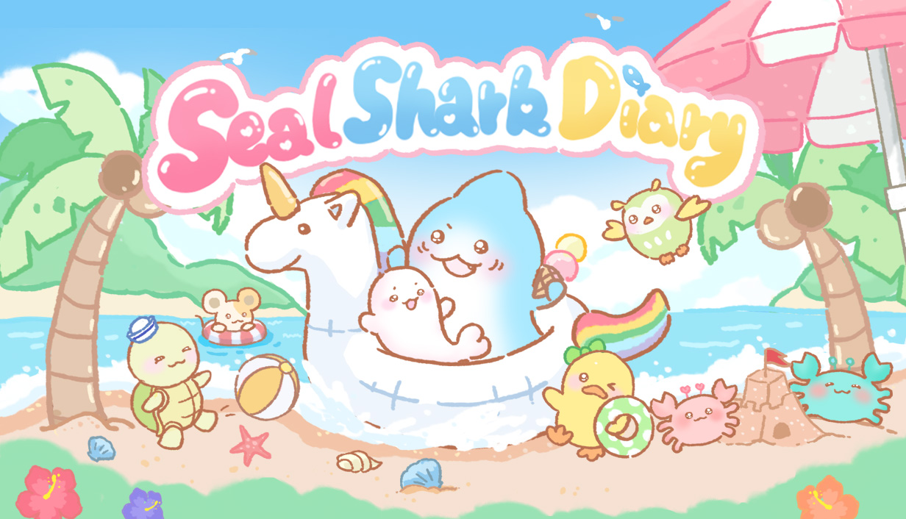
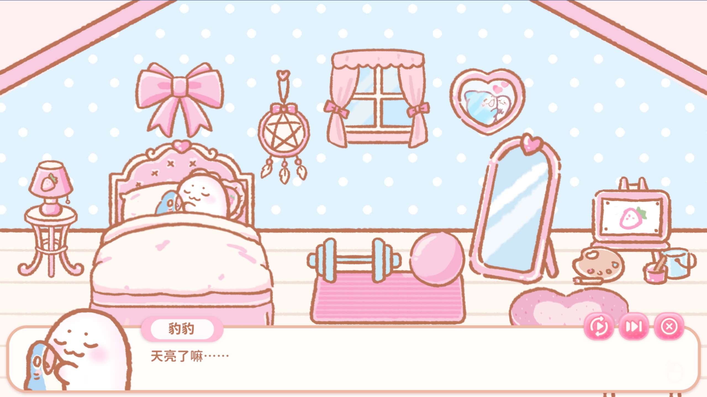
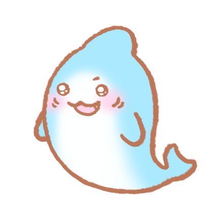
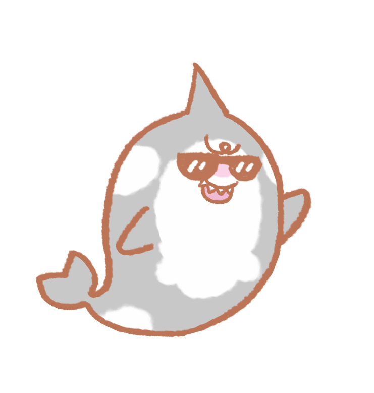

Seal
You play as Seal, a chef who takes up cooking and opens a diner to bring Shark home.
A little diner, a small island, and a story about friendship.

ABOUT THE GAME
Seal Shark Diary is a hand-drawn management sim. Play as a seal chef, experiment with recipes, grow ingredients, and run a diner as you get to know the residents of Seal Island.
Serve the islanders your cooking to build friendships. As your little diner grows, new stories unfold around the island.
THE STORY
Seal, Shark, and their friends live happily on the island until an unexpected visitor arrives. Orca damages buildings around the island and causes trouble for everyone.
Before Shark can figure out how to send Orca away, Orca takes Shark captive. To bring Shark home, Seal agrees to cook the most delicious food Orca has ever tasted.
Can Seal bring Shark home? And what will it take to deal with the island’s uninvited guest?

You play as Seal, a chef who takes up cooking and opens a diner to bring Shark home.

Seal’s friend and housemate. When Orca takes Shark away, Seal sets out to bring Shark home.

The visitor who disrupts the island’s peace. Orca takes Shark away and asks Seal for a truly delicious meal.
LIFE ON SEAL ISLAND

Combine ingredients to make new dishes. Mix traits to change a dish’s quality, freshness, and the friendship it earns.
Serve the islanders to earn friendship points. Plan your menu and watch which dishes take off as your diner grows.
Unlock garden plots and grow your own ingredients. Seed traits carry through to the harvest, giving you more to experiment with in the kitchen.
Try your timing in the island’s fishing minigame and see how big a fish you can reel in.
A LOOK INSIDE
Your next story begins on the island.
Wishlist on SteamRead the devlog ↗